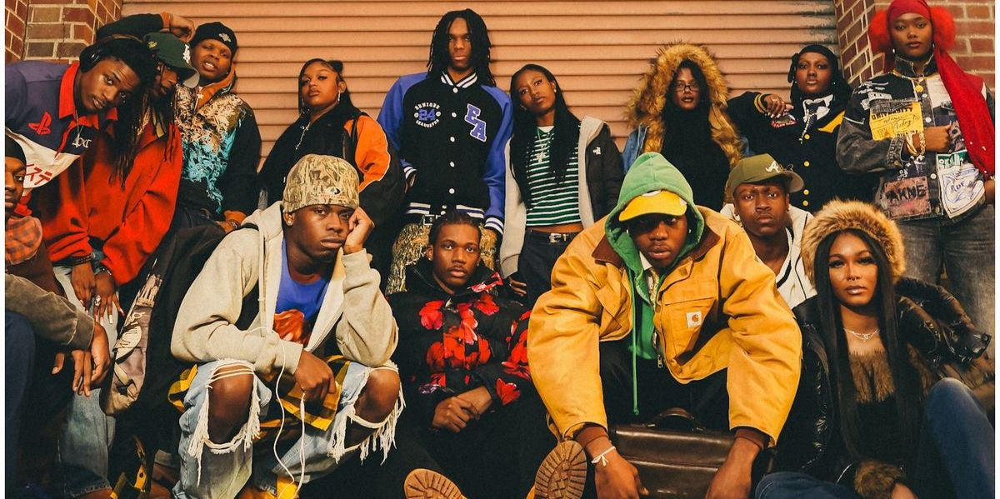

¡Vamos a descubrir qué estilo de ropa urbana va más contigo! Aquí tienes un test tipo revista, con preguntas de personalidad y estilo. Al final, podrás ver qué tipo de moda urbana te representa mejor: ¿eres más skate, hip-hop, minimalista o retro noventero?
- a) Patino con mis amigos o voy al parque.
- b) Escucho música y escribo letras o dibujo.
- c) Me gusta salir a caminar por la ciudad con estilo.
- d) Veo series noventeras o busco ropa vintage.
- a) Zapatillas Vans o DC.
- b) Sudadera oversize con capucha.
- c) Camisa blanca bien planchada y pantalón recto.
- d) Chaqueta de mezclilla o bomber retro.
- a) Punk rock o skate punk.
- b) Rap, trap o reguetón old school.
- c) Lo-fi, R&B o electrónica suave.
- d) Hip-hop de los 90, grunge o house clásico.
- a) Libre y rebelde.
- b) Creativa y expresiva.
- c) Minimalista y elegante.
- d) Nostálgica y auténtica.
- a) Tonos tierra, negro y grafiti.
- b) Rojos, negros, dorados y neones.
- c) Blanco, gris, beige y azul marino.
- d) Verde oliva, mostaza, denim y estampados retro.

?? RESULTADOS
Eres libre, relajado y te mueves por la ciudad como si fuera tu pista. Tu ropa es cómoda, funcional y con actitud. Vans, gorras planas y camisetas gráficas son tu sello.
Tu ropa habla fuerte, como tus ideas. Te gusta lo oversize, los accesorios llamativos y los colores que destacan. Eres creativo y expresivo, y tu estilo lo refleja.
Menos es más. Prefieres líneas limpias, colores neutros y prendas bien estructuradas. Tu estilo es sofisticado pero relajado, ideal para moverte con clase por la ciudad.
Eres nostálgico y auténtico. Te inspiras en los 90: chaquetas bomber, jeans anchos, camisetas vintage. Tu estilo es una cápsula del tiempo con mucho flow.